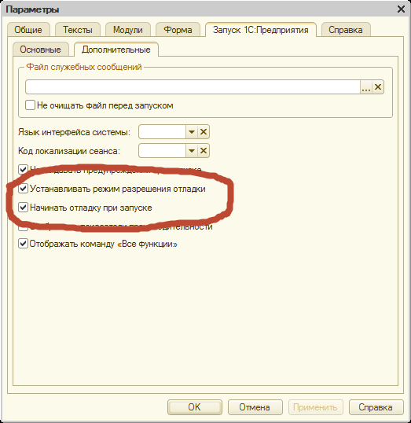
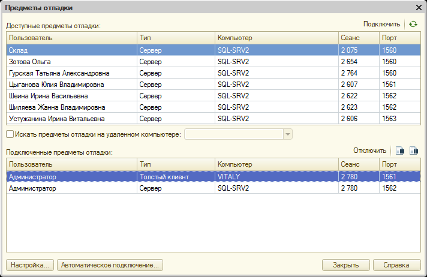
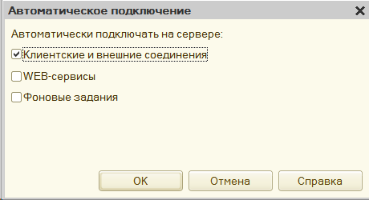

Имеется следующая проблема: при разработке в режиме клиент-сервер (тонкий клиент), в дебаггере 1С не работает вход в процедуры, выполняемые на сервере.
Включить отладку можно следующим способом.
Вначале нужно на сервере проверить, с какими флагами запущены сервиса 1С. Сервис srv1cv82 запускает три процесса. Посмотреть их можно командой:
# ps aux | grep 1c
usr1cv82 2952 0.0 0.3 114380 15464 ? Ssl Июл06 29:33 /opt/1C/v8.2/i386/ragent -daemon
usr1cv82 2986 0.1 0.5 298612 24380 ? Sl Июл06 149:53 /opt/1C/v8.2/i386/rmngr -port 1541 -range 1560:1591
usr1cv82 3108 0.0 3.7 485660 154968 ? Sl Июл06 50:24 /opt/1C/v8.2/i386/rphost -range 1560:1591 -reghost energobase -regport 1541 -pid 9d4225ae-9e32
Видно, что процесс ragent запущен с параметром -daemon. И нужно добиться того, чтобы этот сервис запускался с параметром -debug.
Поиск по сети дал следующую информацию: дебаг на серверной части под linux можно запустить, установив в скрипте запуска (/etc/init.d/srv1cv81) следующую строку:
SRV1CV8_DEBUG=1
Внимание! Во многих Linux-дистрибутивах редактировать файл скрипта запуска сервиса нельзя в тот момент, когда сервис запущен. Поэтому вначале надо остановить сервис сервера 1С:
service srv1cv82 stop
затем надо отредактировать файл запуска /etc/init.d/srv1cv81, затем включить сервис сервера 1С:
service srv1cv82 start
После чего можно проверить, с какими опциями запустился процесс ragent:
# ps aux | grep 1c
usr1cv82 11521 0.0 0.3 105708 14140 ? Ssl 14:03 0:00 /opt/1C/v8.2/i386/ragent -daemon -debug
usr1cv82 11524 0.5 0.5 261168 24624 ? Sl 14:03 0:00 /opt/1C/v8.2/i386/rmngr -port 1541 -range 1560:1591 -debug
usr1cv82 11539 0.1 0.5 122968 24236 ? Sl 14:03 0:00 /opt/1C/v8.2/i386/rphost -range 1560:1591 -reghost energobase -regport 1541 -pid 9d4225ae-9e32
Видно, что у процесса ragent появилсь опция -debug.
Далее нужно сделать настройки в самом конфигураторе.
В параметрах надо включить две галки:

И в настройке предметов отладки надо проверить, чтобы был подключен сервер в качестве предмета отладки. "Отладка" - "Подключение" - "Подключенные предметы отладки". Эта настройка делается в момент, когда отладка запущена (F5):

Возможно (не подтверждено), что еще потребуется по кнопке "Автоматическое подключение" сделать следующую настройку:
